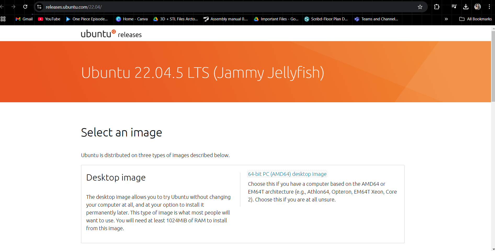
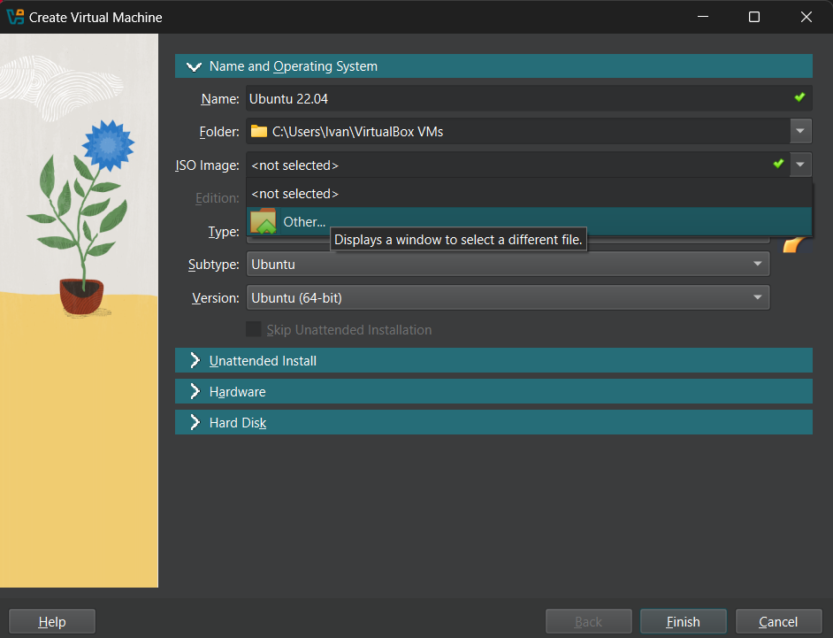
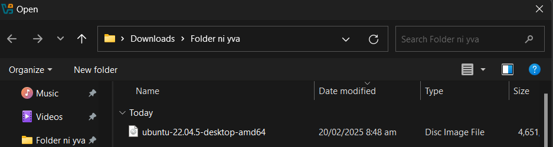

Introduction to the
Robot Operating System 2
64-bit PC (AMD64) desktop image.

Ubuntu 22.04 for easy navigation and make sure you choose the folder where you have enough space.

Other… and locate your ISO file.

Warning! If you are presented with a terminal, just navigate through your arrow keys to Ubuntu (Safe Graphics) and hit ENTER. This will open a window where you can see the installation of Ubuntu 22.04, this is an attended install. Just wait for the installation to finish which would take around 10 minutes (depending on your resource provision).
cd ~/Downloads && sudo dpkg -i *.debcode in a new terminal. Visual Studio Code must appear if it is properly installed.locale # check for UTF-8
sudo apt update && sudo apt install locales
sudo locale-gen en_US en_US.UTF-8
sudo update-locale LC_ALL=en_US.UTF-8 LANG=en_US.UTF-8
export LANG=en_US.UTF-8
locale # verify settingsuser is not in sudoers file appeared, perform the code below.
su rootroot@user:/home/user.
nano /etc/sudoersuser ALL=(ALL) ALLsudo apt install software-properties-common
sudo add-apt-repository universe
sudo apt update && sudo apt install curl -y
sudo curl -sSL https://raw.githubusercontent.com/ros/rosdistro/master/ros.key -o /usr/share/keyrings/ros-archive-keyring.gpg
echo "deb [arch=$(dpkg --print-architecture) signed-by=/usr/share/keyrings/ros-archive-keyring.gpg] http://packages.ros.org/ros2/ubuntu $(. /etc/os-release && echo $UBUNTU_CODENAME) main" | sudo tee /etc/apt/sources.list.d/ros2.list > /dev/nullsudo apt update
sudo apt upgrade
sudo apt install ros-humble-desktop
sudo apt install '~nros-humble-rqt*'
sudo apt install python3-colcon-common-extensions
sudo apt install python3-rosdep2
sudo apt install ros-humble-rqt-graph
sudo apt install ros-humble-turtlesim
sudo apt install git
rosdep update
echo "source /opt/ros/humble/setup.bash" >> ~/.bashrcros2 run demo_nodes_py talkerros2 run demo_nodes_py listener